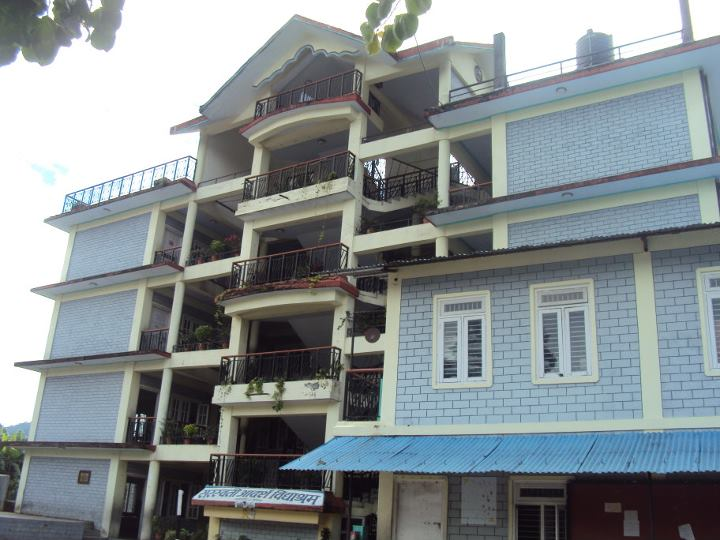
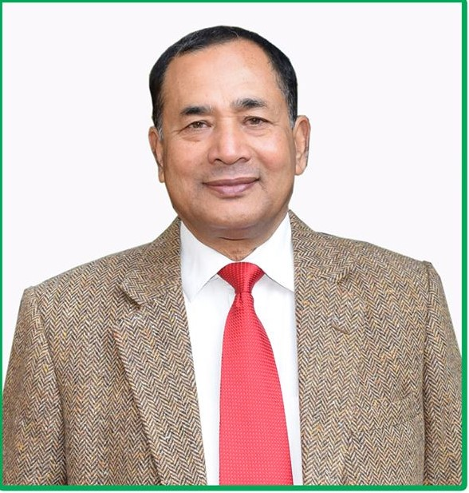
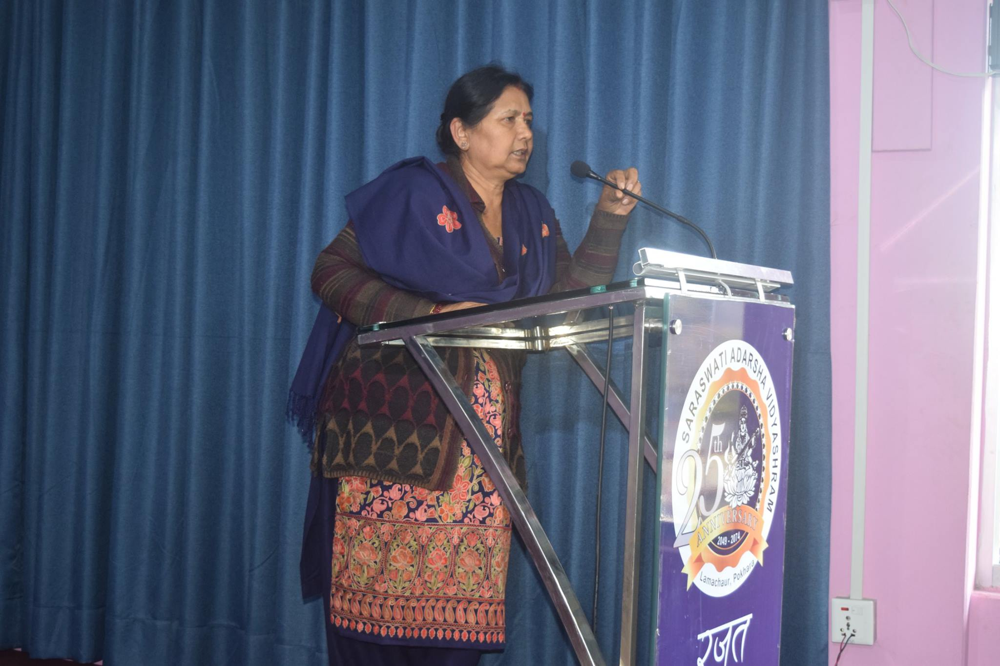
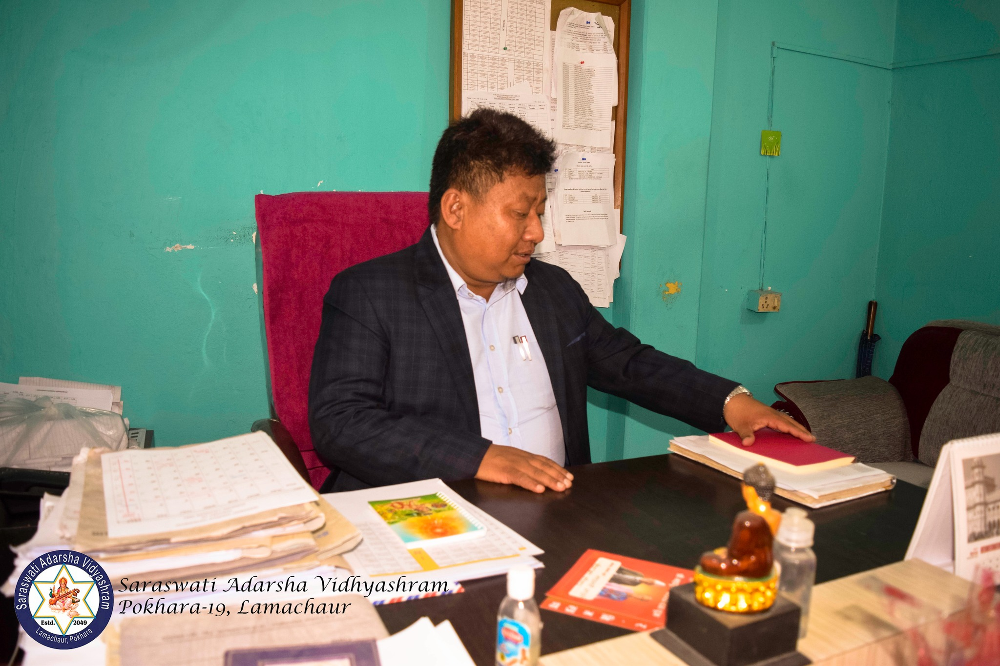
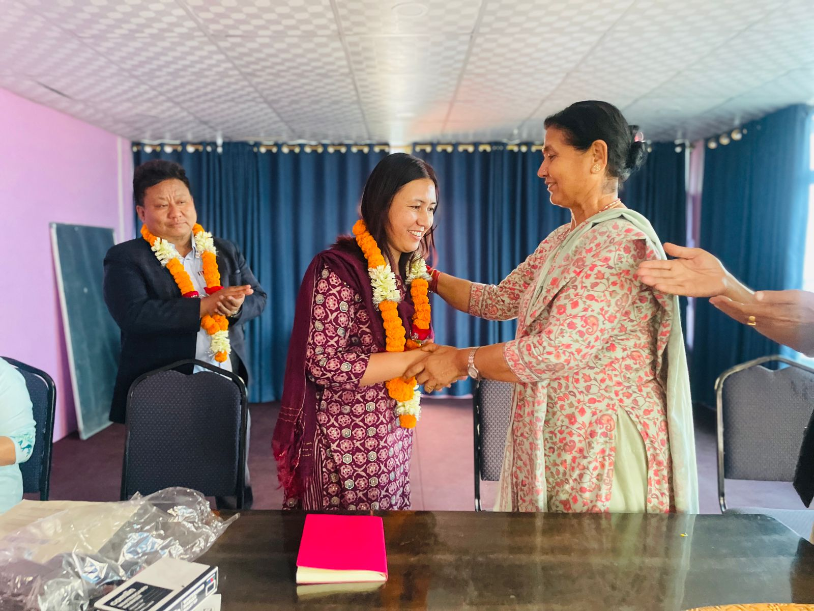
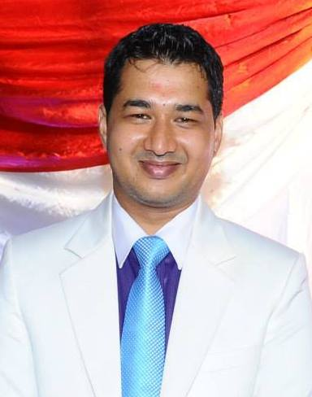

"SARASWATI ADARSHA VIDYASHRAM"
It was estblished on 2049 BS with a small sized house.
EXCUTIVES

MR. Ganesh Man singh Bhandari- the director of SARASWATI ADARSHA VIDYASHRAM.
Only one share holder of the entire saraswati adarsha vidyashram.
(MESSAGE FROM THE DIRECTOR)-
SARASWATI ADARSHA VIDYASHRAM ,in its 31 years of existence, has been able to present itself as one of the pioneer academic insituation of nepal.
SAV , being a well established academic insituation strives for all round development of the students and always encourages them to become responsible and compentent citizens of this global village.i would like to congratulate all the see graduates of the school and for their tremendous achivements they have gained in their further studies and careers.i wish all the best for the current see batch and hope for the excellence result as usuals.

DR. Radha Bhandari- the chairperson of SARASWATI ADARSHA VIDYASHRAM.

MR. Krishna Gurung - Principle of SARASWATI ADARSHA VIDYASHRAM.

MRS.Nirmala Gurung - Junoir Incharge of SARASWATI ADARSHA VIDYASHRAM

MR. Swagat Singh Bhandari-school's administrative